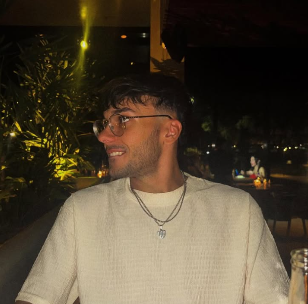

El video del tótem de Eco Bolsas que está en la expo y el teaser de un videoclip animado.
Animación · Motion Graphics · Edición
Animador 2D/3D, motion designer y editor de video. Le doy movimiento a marcas, músicos e historias desde Lisarts Studios.
Cada sección tiene sus trabajos.

Soy animador 2D/3D, motion designer y editor de video. Estudio Cine de Animación y PostProducción en Escuela Da Vinci, y combino animación, edición y motion graphics para que cada pieza cuente algo y funcione donde se va a ver.
Dirigí la animación del documental "El Punto" (Rueque Cine), trabajo con músicos dándole imagen a sus lanzamientos y hago contenido animado para marcas.
Una presentación animada de lo que hago y las herramientas con las que trabajo.